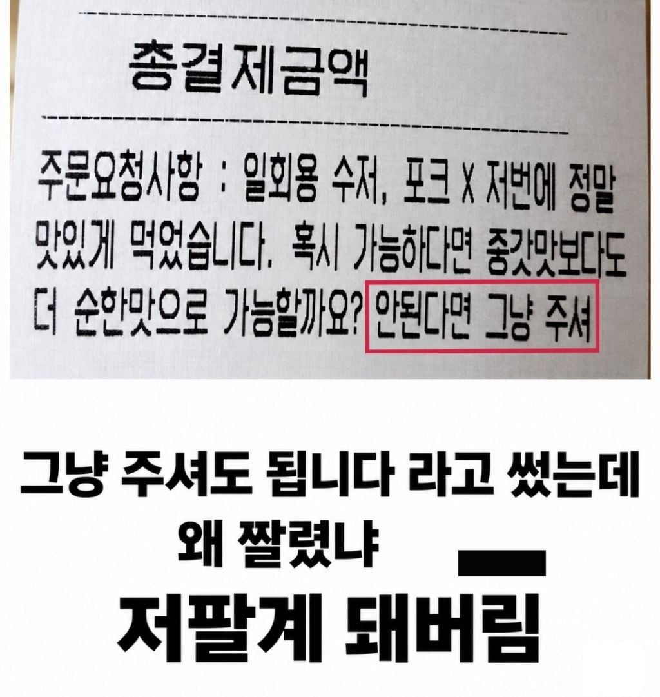
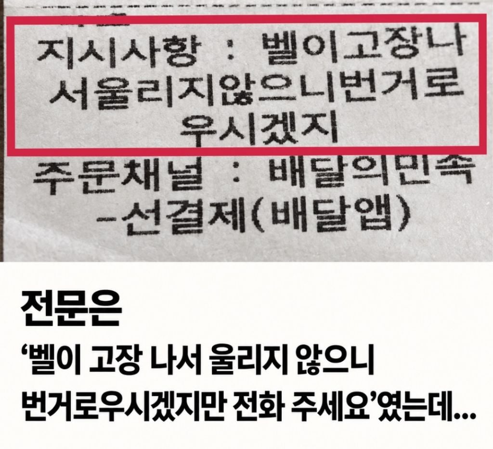
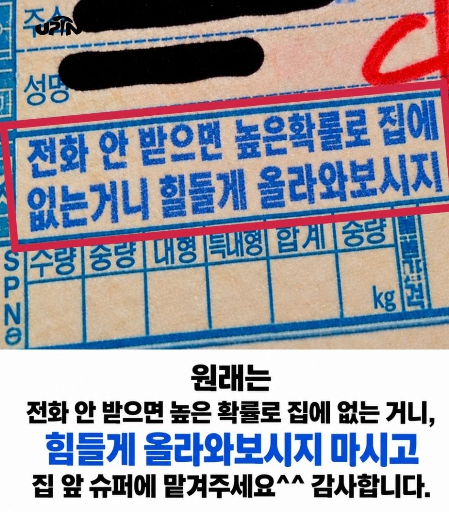

저런 요구사항 적을 때 예의 차린다고 길게 적는게 나을까? 아니면 용건만 간단히 집앞슈퍼. 벨고장 전화요. 이렇게 적는게 낫나
후자
전자 지루하고 현학적임
후자 간단하고 직관적임
하지만 우리는 전자가 웃기죠
배달하는 입장에서 길게 적는 게 기분이 좋긴 해 예의차린 요청사항 보면 하루종일 행복하더라 ㅎㅎ
근데 저 난장찬 나면 갑분 추리게임이잖아 ㅋㅋㅋ
그럼 추리하면서 재밌는 이벤트라고 생각되던데 ㅋㅋㅋ 글구 대충 90%는 맞음. 애매하고 중요한 요청사항같으면 전화해서 문의함(고객이 아니라 본사에 전화해서)
2, 3번은 어려운데 ㅋㅋㅋㅋㅋ
나는 짧은게 좋았음. 사람차이인걸로
글이니까 받아들이는 사람 마음데로 생각할 수 있으니 좋은쪽으로 생각하자
두괄식이면 됩니다
중첩의문문을 사용해라
아무래도 후다지
담백하게 쓰고 감사합니다 적으면 돼
사실 내닉도 원본은 아저씨인데 과거 든파하던시절에 캐릭터닉네임 글자수가 6글자제한이라 줄여쓴거 쭉 사용중임
어라포완폐남 이 딱 떠오르는 닉이네
왜이러셩~
알겠스셔
전보치던 세대들은 20자 기본료 이내에 다 해결한다 이거야.. 전보체를 익히도록
마지막껀 딱봐도 ai주작
나도 저렇게 짤릴까봐 그냥 벨튀ㄱ 적어뒀음 ㅋㅋ 근데도 가끔 그냥 던져놓고가서 식어있더라..
난 짧게쓰는데 집앞에놓고벨튀 이렇게
개웃기네 ㅎㅎㅎ
힐들게 올라와보시지... 올라가면 힐 주신다자나...
함 해보지?
어디 올라와 보시지?
막짤에 터졌네 ㅋㅋㅋ
이래서 저런 요청은 담백하게 쓰는게 맞는거같음